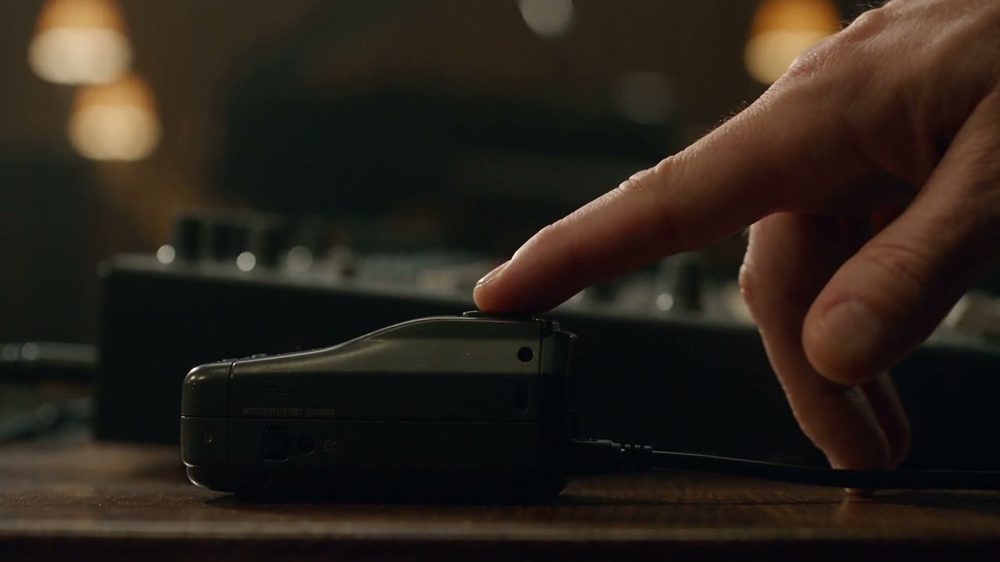
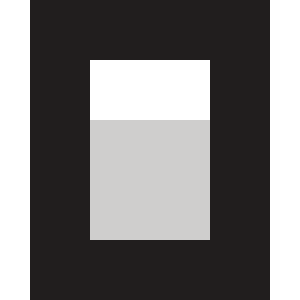

Transcríbeme.cl
De un audio largo a una transcripción y un resumen que puedes revisar y descargar.
Portafolio personal Chile
Desarrollo software para quitarle trabajo manual a tu equipo.
Grabé conciertos de jazz en Buenos Aires. Hoy desarrollo software en Chile con la misma costumbre: escuchar primero.
01 / Grabación en vivo
Tomé la iniciativa de grabar una presentación de Daniel Maza, Hernán Jacinto y Pipi Piazzolla. La grabación se publicó como disco en 2024.

02 / Transcríbeme
Construí Transcríbeme para convertir audios en documentos que puedas revisar y descargar. En la beta puedes probarlo con tus propios archivos.
03 / Hermes
Convertí mi PC en un servidor sin monitor. Con Hermes, puedo conectar un disco, pedir el respaldo desde el celular y revisar la copia sin sentarme frente al equipo.
Conecto un disco Pido el respaldo Reviso la copia
Leer el caso del servidor01 / Proyectos
Dos proyectos propios: uno nació del trabajo con audio; el otro, de querer operar mi computador desde el teléfono.
De un audio largo a una transcripción y un resumen que puedes revisar y descargar.
Convertí mi PC en un servidor sin monitor para respaldar, ordenar y consultar archivos desde el celular.
Desliza hacia un lado para recorrer la galería.
01 / Sector agroindustrial
Vía ImpulzIA, visité plantas, participé en el diagnóstico y trabajé en la arquitectura y el backend de un MVP de gestión documental y trazabilidad. Se probó con operarios y datos reales en un entorno de prueba.
MVP probado · sin implementación formal
02 / Boutique Paqui
Desarrollé un sistema para centralizar costos por prenda, proveedores, producción, ventas e inventario. Incluye cuentas para registrar ventas y alertas de stock bajo.
Desplegado · primeras iteraciones
03 / Wine Experience by Paz Cornú
Vía ImpulzIA, trabajé en la web del evento, las campañas en Meta y un sistema de entradas que permitía validar el acceso por QR o por nombre.
Evento realizado · marzo de 2026
04 / Mercado Público
Exploro cómo detectar oportunidades y extraer requisitos de documentos. En las pruebas separo lo que omite el modelo, lo que se pierde durante el procesamiento y lo que no se puede obtener de la fuente.
Iniciativa propia · en desarrollo
02 / Experiencia
Diseño herramientas para el flujo real de quienes las van a usar. Así abordo la automatización de procesos.
Trabajo en producto, desarrollo y propuestas técnicas en una empresa familiar de ingeniería y tecnología.
Durante el primer mes con Somos Inversión, identifiqué pasos del marketplace que le complicaban el trabajo al equipo y participé en el rediseño. Hoy el equipo ya actualiza información directamente desde la plataforma.
Conocer MMJ SystemsParticipé en consultoría tecnológica, levantamiento de procesos y desarrollo de aplicaciones. Trabajé con clientes, diseñé arquitectura y desarrollé backend y herramientas para gestión y eventos.
03 / Sobre mí

Empecé a programar para quitarle fricción al día a día de mis proyectos musicales.
Entre preparar shows, grabar y publicar material, empecé a construir las herramientas que necesitábamos. Así llegué al desarrollo de producto. Hoy mi foco está en backend con Python y Django, automatización e IA aplicada.
Una fecha más / Buenos Aires
En la quinta de una serie de presentaciones en Buenos Aires, grabé por iniciativa propia a Daniel Maza, Hernán Jacinto y Pipi Piazzolla. El registro se publicó como disco en 2024. Compartí la mezcla y el mastering con Hernán Jacinto.
Leer la entrevista a Pipi PiazzollaSonido en vivo, producción de grabaciones y coordinación con artistas, productores y equipos de radio y televisión, principalmente en el ámbito del jazz.
Preparación técnica de shows, operación de sala y organización de grabaciones en vivo. Trabajar con dos y a veces tres shows por día me enseñó a anticipar problemas y coordinar bajo presión.
Publicado · 2024
Daniel Maza, Hernán Jacinto y Pipi Piazzolla. Ingeniería de grabación; mezcla y mastering junto a Jacinto.
Ver créditosPublicado · 2025
Argentum Jazz Quinteto. Asistencia de grabación, mezcla y mastering.
Ver en Club del DiscoGrabado · octubre de 2024
Ingeniería de grabación, mezcla y mastering.
Ver trayectoria del trío04 / Bitácora
Proyectos chicos, intereses y preguntas que sigo explorando.
01 / Hardware · Hecho
Recuperé un Mac antiguo, le instalé Ubuntu y lo conecté por Ethernet para volver a usarlo como equipo de desarrollo.
02 / Electrónica · Montaje iniciado
Empecé un montaje de riego por planta con sensores. Todavía queda por comprobar cómo se comporta en uso.
03 / Taller · Ideas
Dos ideas de taller: un probador de cables de audio y un auto a control remoto modular. Por ahora, son ideas por montar.
04 / Música · Práctica e intereses
Jazz, piano, repertorio clásico y entrenamiento auditivo. Me interesa escribir partituras con LilyPond y probar herramientas de IA para composición.
05 / IA · En exploración
Comparo modelos por calidad de código y costo por tarea. Exploro cómo separar lo que un agente puede hacer solo de lo que requiere aprobación, y cómo registrar lo que pasó.
06 / Lecturas y aprendizajes
Leo sobre economía, geopolítica y ciencia. También me interesa documentar lo cotidiano: desde una reparación entre amigos hasta cómo explicarla en una guía por WhatsApp.
05 / Conocimientos
Herramientas que uso en desarrollo, automatización y proyectos propios.

OpenCode OpenAI Anthropic Prompt EngineeringRAGAgentes de IA06 / Formación
Título obtenido en 2021.
Estudios avanzados, sin titulación.
Un año cursado.
Estudios parciales.
Cursos de programación, backend, IA, emprendimiento y finanzas; aprendizaje continuado mediante proyectos propios y trabajo con clientes.
07 / Contacto
¿Hay una tarea que tu equipo repite a mano? Cuéntame cómo la hacen hoy.
Contacto directo